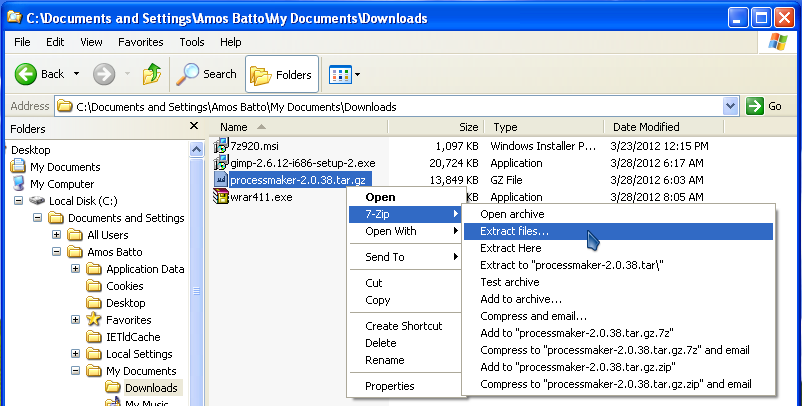
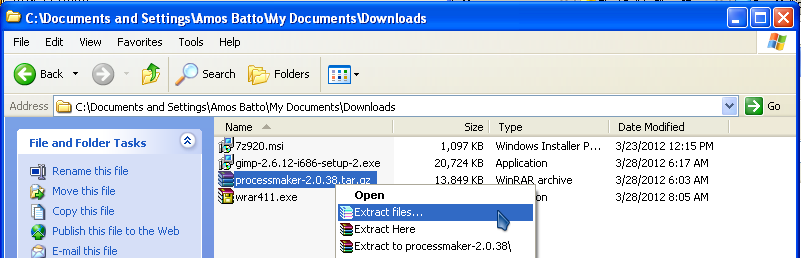
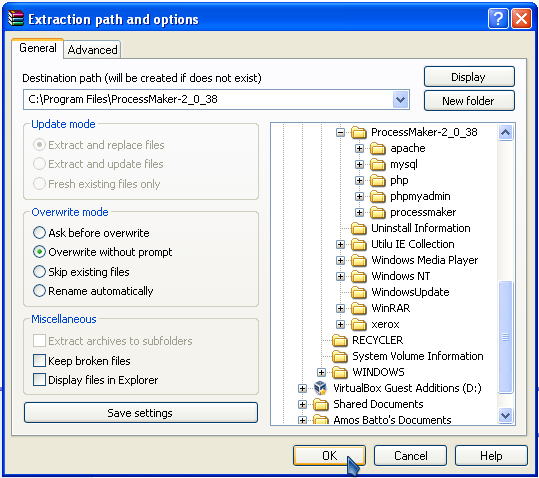
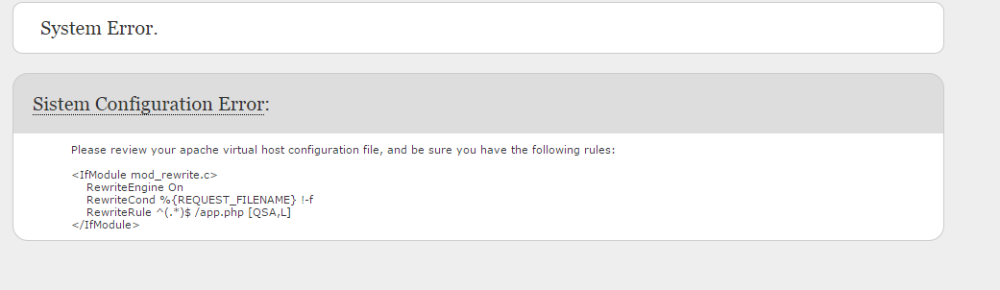

Overview
This guide explains the necessary steps to migrate from ProcessMaker version 2.5 and earlier to version 2.8 and later. The structure of the databases and the file locations may change from one version of ProcessMaker to the next, so do NOT try to use data from one version of ProcessMaker in a different version of ProcessMaker, without following instructions on this page.
Safety Precautions before Upgrading
If using ProcessMaker in production, before upgrading ProcessMaker, it is recommended to first install the new version of ProcessMaker on a separate test server (or in a separate port or domain in the same server) and import your processes into the test server to verify that there are no incompatibilities.
Before upgrading ALWAYS make a complete backup copy of directory where ProcessMaker is installed and use mysqldump to make a complete backup of the 3 databases used by each workspace. If an error arises, it will be possible to go back to the previous version of ProcessMaker and restore its data.
WARNING: It is not very easy to restore a previous version of ProcessMaker with just a backup created with the gulliver workspace-backup command, so it is recommended to make full ProcessMaker backups using the method below.
Linux/UNIX:
To make a backup copy of the entire MySQL database:
To back up just the databases for a ProcessMaker workspace, such as the "workflow" workspace:
TIP: If unsure what the MySQL databases are named, login to MySQL and issue the command: SHOW DATABASES;
Windows:
Use a compression program like WinRar to make a backup copy of the ProcessMaker installation directory, which is usually located at C:\Program Files\ProcessMaker-2_X_X\processmaker in Windows XP/Server 2003 and at C:\Users\USERNAME\AppData\Roaming\ProcessMaker-2_X_X\processmaker in Windows Vista/7/8/Server 2008.
Open a command prompt window (by going to Start > All Programs > Accessories > Command Prompt) and navigate to the directory where the mysqldump command is located. For example:
Then, use the mysqldump command to backup the MySQL databases as shown above for Linux/UNIX.
Restoring ProcessMaker If Problems Arise
If problems arise due to the upgrade, use the backup files to rollback to the previous version of ProcessMaker.
Linux/UNIX:
Login as "root" or the user with administrative powers and remove the ProcessMaker installation directory and replace it with the backup:
tar -xzf BACKUP-FILE.tar.gz
Then, restore the databases:
Windows:
Delete the current ProcessMaker installation directory, which by default is located at c:\Program Files\ProcessMaker-2_X_X in Windows XP/2003 orc:\Users\USERNAME\AppData\Roaming\ProcessMaker-2_X_X in Windows Vista/7/8/Server 2008.
Open a command prompt window (by going to Start > All Programs > Accessories > Command Prompt) and navigate to the directory where the mysql command is located. For example:
Then, restore the MySQL databases:
Upgrading to ProcessMaker 2.8 and later
Upgrading the source code
After making a backup of the existing ProcessMaker installation, follow the steps below to install the new ProcessMaker source code, overwriting the old source code.
1. Go to http://sourceforge.net/projects/processmaker/files/ProcessMaker and download a processmaker-X.X.X.tar.gz file, which has a new version of the ProcessMaker source code.
2. Decompress the processmaker-X.X.X.tar.gz file, overwriting the existing processmaker directory and all its contents, which is generally found at /opt/processmaker in Linux/UNIX, atC:\Program Files\ProcessMaker-2_X_X\processmaker in Windows XP/2003, and at C:\Users\USERNAME\AppData\Roaming\ProcessMaker-2_X_X\processmaker in Windows Vista/7/8/Server 2008.
Warning: Do NOT delete the old processmaker directory and then copy the new processmaker directory into the same place, because all the essential configuration information and all the uploaded input documents and attached files from the old installation will be lost. Instead, decompress the file so it will overwrite any existing files but won't effect any other files (such as the contents of the shared and workflow/engine/config directories and the workflow/engine/test/bootstrap/gulliverConstants.php file).
Linux/UNIX:
1. Login as the "root" user (or use the sudo command). Then, use the tar command to overwrite the existing installation of ProcessMaker. Use the --overwrite option to replace the existing files and the -p option to preserve the permissions of existing files. Use the -C option to specify the parent directory where the processmaker directory is located.
For example, to upgrade an installation of ProcessMaker located at /opt/processmaker with the file processmaker-2.8.0.tar.gz:
Note: If the ProcessMaker directory isn't named "processmaker", then temporarily rename it as "processmaker" so it will be correctly overwritten when the tar.gz file is decompressed. Then rename it back to its original name.
For example, if ProcessMaker is installed at /usr/local/bin/pm, then rename it to /usr/local/bin/processmaker before overwriting the code files:
tar --overwrite -p -C /usr/local/bin -xvzf /root/processmaker-2.0.38.tar.gz
mv /usr/local/bin/processmaker /usr/local/bin/pm
2. Then, issue the following commands so that ProcessMaker can access the necessary files when run by the Apache server:
chmod -R 770 shared
cd /opt/processmaker/workflow/engine/
chmod -R 770 config content/languages plugins xmlform js/labels
3. Finally, change the owner of the ProcessMaker files to the user which runs Apache. This user depends upon your distribution:
Debian/Ubuntu:
RedHat/CentOS/Fedora:
SUSE/OpenSUSE:
Windows:
Use a decompression program like WinRAR which supports the tar.gz format to decompress the source code and overwrite the existing processmaker directory, which by default is located at c:\Program Files\ProcessMaker-2_X_X\processmaker in Windows XP/2003 or c:\Users\USERNAME\AppData\Roaming\ProcessMaker-2_X_X\processmakerin Windows Vista/7/2008.
Upgrading with 7-Zip
- Right click on the processmaker-2_X_X.tar.gz file which was downloaded and select the option 7-Zip > Extract files... from the dropdown menu.

- In the "Extract" dialog box that appears, go to the Extract to: field and enter the parent directory to the processmaker directory, which by default is located at c:\Program Files\ProcessMaker-2_X_X in Windows XP/2003 and c:\Users\USERNAME\AppData\Roaming\ProcessMaker-2_X_X in Windows Vista/7/8/Server 2008. Also select the Overwrite without Prompt option in the Overwrite mode: dropdown box.

- Then, click on OK to begin the extraction.

Upgrading with WinRAR
- Right click on the processmaker-2_X_X.tar.gz file which was downloaded and select the option Extract files... from the dropdown menu.

- In the "Extraction Path and Options" dialog box that appears, go to the Destination Path field and enter the parent directory to the processmaker directory, which by default is located at c:\Program Files\ProcessMaker-2_X_X in Windows XP/2003 and c:\Users\USERNAME\AppData\Roaming\ProcessMaker-2_X_X in Windows Vista/7/8/Server 2008. Also mark the Overwrite without prompt option in the Overwrite mode section.

- Then, click on OK to begin the extraction.

Upgrading the ProcessMaker databases
After upgrading the processmaker source code, then use the processmaker upgrade command to upgrade the 3 databases used by each ProcessMaker workspace.
Go to the processMaker installation directory and run the processmaker upgrade command from the command line.
Linux/UNIX:
Login as root (or use the sudo -i command), then:
./processmaker upgrade
If an error message appears such as "/usr/bin/env: php: No such file or directory", then make sure that the PHP Command Line Interface is installed (whose package is named php-cli in Red Hat/CentOS/Fedora and php5-cli in Debian/Ubuntu). If PHP-CLI is already installed, then it is not installed in a location found in your $PATH, so use the full path when executing PHP-CLI:
/PHP-PATH/php -f processmaker upgrade
Windows:
If ProcessMaker was installed using the automatic installer, then open the Command Prompt (by going to Start > All Programs > Accessories > Command Prompt). Then, at the command line, go to the ProcessMaker installation directory, which by default is located at C:\Program Files\ProcessMaker-2_X_X\processmaker in Windows XP/Server 2003 orC:\Users\USERNAME\AppData\Roaming\ProcessMaker-2_X_X\processmaker in Windows Vista/7/8/Server 2008. Once in the processmaker directory, then execute the following command:
For example:
C:\Users\USERNAME\AppData\Roaming\ProcessMaker-2_X_X\php\php -f processmaker upgrade
If ProcessMaker was manually installed, login as the Administrator and open the Command Prompt (by going to Start > All Programs > Accessories > Command Prompt) and enter:
processmaker.bat upgrade
Changing the Apache configuration
ProcessMaker version 2.8 and later needs a different VirtualHost configuration in Apache than version 2.5 and earlier.
In ProcessMaker version 2.5 and earlier, the Apache VirtualHost configuration uses the following rewrite rule:
ServerName "your_processmaker_domain"
DocumentRoot /opt/processmaker/workflow/public_html
DirectoryIndex index.html index.php
<Directory "/opt/processmaker/workflow/public_html">
AddDefaultCharset UTF-8
AllowOverRide none
Options FollowSymlinks
Order allow,deny
Allow from all
RewriteEngine on
RewriteRule ^.*/(.*)$ sysGeneric.php [NC,L]
ExpiresActive On
ExpiresDefault "access plus 1 day"
ExpiresByType image/gif "access plus 1 day"
ExpiresByType image/png "access plus 1 day"
ExpiresByType image/jpg "access plus 1 day"
ExpiresByType text/css "access plus 1 day"
ExpiresByType text/javascript "access plus 1 day"
AddOutputFilterByType DEFLATE text/html
</Directory>
</VirtualHost>
However, the VirtualHost configuration needs to be changed to the following rewrite rule in order to work correctly:
ServerName "your_processmaker_domain"
DocumentRoot /opt/processmaker/workflow/public_html
<Directory /opt/processmaker/workflow/public_html>
AddDefaultCharset UTF-8
AllowOverRide none
Options FollowSymlinks
Order allow,deny
Allow from all
RewriteEngine On
RewriteCond %{REQUEST_FILENAME} !-f
RewriteRule ^(.*)$ /app.php [QSA,L]
ExpiresActive On
ExpiresDefault "access plus 1 day"
ExpiresByType image/gif "access plus 1 day"
ExpiresByType image/png "access plus 1 day"
ExpiresByType image/jpg "access plus 1 day"
ExpiresByType text/css "access plus 1 day"
ExpiresByType text/javascript "access plus 1 day"
AddOutputFilterByType DEFLATE text/html
</Directory>
</VirtualHost>
Note: If using Apache 2.4, then change the following line from:
Allow from all
To:
Also make sure that the Apache filter module is enabled in Apache 2.4 in order to prevent errors with the following line:
If this change in the rewrite rule is not made, it will no longer be possible to access ProcessMaker in a web browser. Either the ProcessMaker login screen will not load or the following error will appear:

To change the rewrite rule, edit the pmos.conf file where the ProcessMaker VirtualHost is defined. Its location depends on your operating system:
Red Hat/CentOS/Fedora:
- /etc/httpd/conf.d/pmos.conf
Debian/Ubuntu/Mint:
- /etc/apache2/sites-available/pmos.conf
SuSE/OpenSUSE:
- /etc/apache2/conf.d/pmos.conf
Windows XP/Server 2003:
- c:\Program Files\ProcessMaker-2_X_X\apache\conf\pmos.conf
Windows Vista/7/8/Server 2008:
- c:\Users\USERNAME\AppData\Roaming\ProcessMaker-2_X_X\apache\conf\pmos.conf
Open the pmos.conf file with a plain text editor and change the following lines from:
To:
RewriteRule ^(.*)$ /app.php [QSA,L]
Then restart the Apache web server for the changes to take effect.
Enabling the fileinfo extension
In ProcessMaker 2.8 and later, the fileinfo extension in PHP must be enabled in order to upload files as Input Documents. In the definition of Input Documents, it is now possible to specify which types of files may be uploaded in the Allowed file extensions field. Fileinfo is used to check the file extension and content of files before adding them as Input Document files.
The fileinfo extension is included by default in PHP 5.3.0 and later. To check whether it is enabled, issue the following command from the command line:
In Windows, it is necessary to specify the path where the php.exe file is located. For example:
[PHP Modules]
bcmath
bz2
calendar
com_dotnet
Core
ctype
date
dom
ereg
exif
fileinfo
...
If fileinfo doesn't appear in the list, then it needs to be enabled by editing the php.ini file.
Linux/UNIX:
Use a plain text editor (such as nano, vim or gedit) to edit php.ini file, whose location depends on your distribution. Add or uncomment the following line:
Windows:
Use a plain text editor (such as notepad, Notepad++ or the DOS edit command) to edit the php.ini file, which by default is located at C:\Program Files\ProcessMaker-2_X_X\php\php.ini in Windows XP/2003 or C:\Users\USERNAME\AppData\Roaming\ProcessMaker-X_X_X\php\php.ini in Windows Vista/7/8/Server 2008. In the php.ini file, uncomment the following line, by changing it from:
To:
After changing the php.ini file, then restart Apache for the change to take effect. To verify that the fileinfo extension is enabled, issue the php -m command again and check whether fileinfo appears in the list.
Enabling the mcrpyt extension
The Enterprise Edition for ProcessMaker 2.8 and later needs to have the mcrypt extension enabled in PHP.
Linux/UNIX:
It is recommended to install the mcrypt module using the package from your Linux/UNIX distribution: Red Hat/CentOS/Fedora:
Debian/Ubuntu/Mint:
SuSE/OpenSUSE:
Windows:
Use a plain text editor (such as notepad, Notepad++ or the DOS edit command) to edit the php.ini file, which by default is located at C:\Program Files\ProcessMaker-2_X_X\php\php.ini in Windows XP/2003 or C:\Users\USERNAME\AppData\Roaming\ProcessMaker-X_X_X\php\php.ini in Windows Vista/7/8/Server 2008.
In the php.ini file, uncomment the following line, by changing it from:
To:
Then restart the Apache server for the mycrypt extension to be enabled.
Unifying the workspace databases
Previous versions of ProcessMaker used 3 databases for each workspace, but ProcessMaker 2.8 and later only uses one database wf_processmaker upgradecommand should run fine in ProcessMaker 2.8 and later.
ProcessMaker 2.8 and later provides the processmaker unify-database command to unify the three databases for each process into one database. It isn't necessary to use it, but if wishing to reduce the number of databases, see Unifying workspace databases.